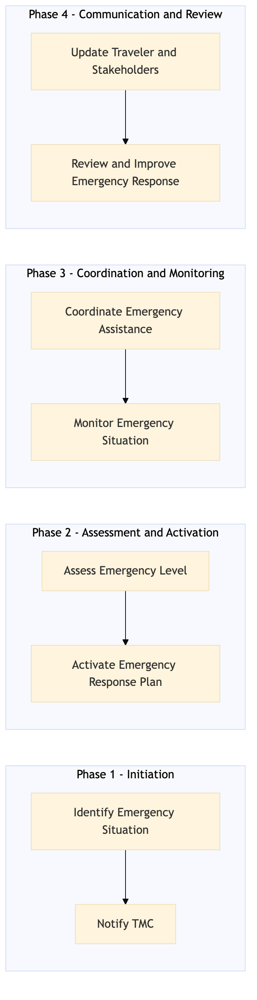

This process document outlines the steps for activating and coordinating emergency assistance for travelers within the TMC Duty of Care and Risk Management domain.
| Trigger | Detection of an emergency situation by the traveler, travel companion, or system monitoring. |
| Outcome | Successful activation and coordination of emergency assistance, ensuring the safety and well-being of the traveler. |
| Systems | Expedia Open World Partner Central Amadeus NDC Sabre GDS Travelport EVC One Key TravelAds AWS SageMaker Snowflake Kafka Salesforce Tableau SAP Concur T2 SAP Concur Expense Amex GBT Neo/Complete Amadeus GDS SAP S/4HANA International SOS Cvent Amex Corporate Card VCN SAP Analytics Cloud Workday |

Click to enlarge
| Step | Name & Pain Point | Role | System | Input | Output | KPI | Flags |
|---|---|---|---|---|---|---|---|
| 1.1 | Identify Emergency Situation Delayed detection of emergencies | Traveler/Companion | Expedia Open World, Partner Central, Amadeus NDC, Sabre GDS, Travelport, EVC, One Key, TravelAds, AWS SageMaker, Snowflake, Kafka, Salesforce, Tableau | Emergency alert or notification | Emergency situation flagged | Time to detect emergency < 5 minutes | ⚠ Exception |
| 1.2 | Notify TMC Failed notification attempts | Traveler/Companion | SAP Concur T2, SAP Concur Expense, Amex GBT Neo/Complete, Amadeus GDS, SAP S/4HANA, International SOS, Cvent, Amex Corporate Card, VCN, SAP Analytics Cloud, Workday | Emergency situation flagged | Notification sent to TMC | Time to notify TMC < 1 minute | ⚠ Exception |
| 2.1 | Assess Emergency Level Inaccurate emergency level assessment | TMC Analyst | SAP Concur T2, SAP Analytics Cloud | Emergency notification | Emergency level assessment | Time to assess emergency < 3 minutes | ◆ Decision |
| 2.2 | Activate Emergency Response Plan Failed activation of emergency response | TMC Analyst | SAP Concur T2, SAP S/4HANA, International SOS | Emergency level assessment | Emergency response plan activated | Time to activate emergency response < 5 minutes | ⚠ Exception |
| 3.1 | Coordinate Emergency Assistance Inefficient coordination of emergency assistance | TMC Analyst | SAP Concur T2, SAP S/4HANA, International SOS, Amex Corporate Card, VCN | Activated emergency response plan | Emergency assistance coordinated | Time to coordinate emergency assistance < 10 minutes | ⚠ Exception |
| 3.2 | Monitor Emergency Situation Lack of continuous monitoring | TMC Analyst | SAP Concur T2, SAP Analytics Cloud, Tableau | Emergency assistance coordinated | Continuous monitoring of emergency situation | Time to monitor emergency < 15 minutes | ◆ Decision |
| 4.1 | Update Traveler and Stakeholders Delayed communication with travelers | TMC Analyst | SAP Concur T2, Salesforce, Tableau | Emergency situation updates | Traveler and stakeholders updated | Time to update traveler < 5 minutes | ⚠ Exception |
| 4.2 | Review and Improve Emergency Response Ineffective review of emergency response | TMC Analyst | SAP Concur T2, SAP Analytics Cloud | Emergency situation resolution | Emergency response plan reviewed and improved | Time to review emergency response < 1 hour | ⚠ Exception |